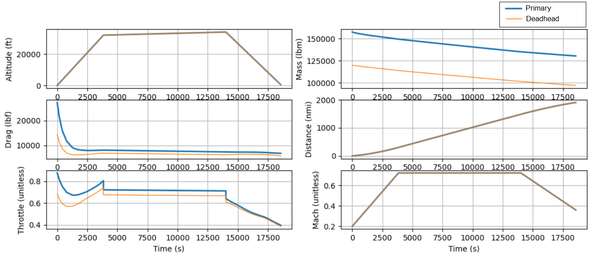

Multi-Mission Example#
The Multi-mission Example demonstrates the capability to optimize an aircraft design considering two missions that the aircraft will perform. For a background on this example see Multi-Mission Overview.
Implementation#
At a minimum, the user must supply the following inputs for a multi-mission:
2 aircraft configuration examples (i.e. .csv files)
2
phase_infodescribing the different aircraft missionsa weighting of the relative importance of each mission
{glue:md}Mission.Design.RANGE
{glue:md}Aircraft.CrewPayload.Design.NUM_PASSENGERS
{glue:md}Aircraft.Design.LANDING_TO_TAKEOFF_MASS_RATIO
Aircraft Configuration#
In the example, we import a single aircraft configuration (LargeSingleAisle2FLOPS) and then modify it to create a primary mission which carries 162 passengers and a deadhead mission. The deadhead mission is a mission with a single passengers, but it still has the same number of seats in the aircraft, even though those seats are mostly empty. The number of seats for passenters in the aircraft, as well as some other systems like passenger airconditioning mass, is set by values of {glue:md}Aircraft.CrewPayload.Design.NUM_PASSENGERS, {glue:md}Aircraft.CrewPayload.Design.NUM_TOURIST_CLASS, {glue:md}Aircraft.CrewPayload.Design.NUM_BUSINESS_CLASS, and {glue:md}Aircraft.CrewPayload.Design.NUM_BUSINESS_CLASS. Whereas the actual number of passengers on the flight is specified by variables of {glue:md}Aircraft.CrewPayload.NUM_PASSENGERS, {glue:md}Aircraft.CrewPayload.NUM_TOURIST_CLASS, {glue:md}Aircraft.CrewPayload.NUM_BUSINESS_CLASS, and {glue:md}Aircraft.CrewPayload.NUM_BUSINESS_CLASS.
Phase Info#
The same mission distance and profile (takeoff, climb, cruise, descent, landing) is being flown for both missions. To enable this, a single phase_info is imported and then deepcopied. The user could modify the deadhead mission to be different from the primary mission by changing the target_range of the deadhead mission to a different value, for example by changing phase_info_deadhead['post_mission']['target_range'] = [1500, "nmi"]
Weighting#
The weights input value describes the relative importance or frequence of one mission over the other. In the example, the the weigting is [9,1] indicating that for every nine times the aircraft flies a full passenger load, it flies a single deadhead leg. These weightings are based on user input and are converted into fractions. This weighting can be estimated from examining historical passenger loads on a typical aircraf route of interest. The objective function is based on combining the fuel-burn values from both missions and multiplying that by the weights. Other objectives, like max range, have not been tested yet.
Setting Values#
The {glue:md}Mission.Design.RANGE value must be set to size some of Aviary’s subsystems. These subsystems, such as avionics, have increasing mass as {glue:md}Mission.Design.RANGE increases. These are first order approximations that come with aviary. But because of these, we must ensure that both pre-missions have the same {glue:md}Mission.Design.RANGE, even if the actual range flown buy each mission (target_rage) is different. Without this, the avoinics mass calculated in pre-mission would be different for the two missions, resulting in a different aircraft design, which is counter to what is intended with the multi-mission feature.
The total number of passengers ({glue:md}Aircraft.CrewPayload.Design.NUM_PASSENGERS) and the design number of passengers of each type (business, tourist, first class), help to define the passenger air conditioning subsystems and the passenger support mass (seats) respectively. Thus when these values are set equal in the primary and deadhead missions, we ensure the aircraft will be designed similarly.
It is good practice, but not required, to set {glue:md}Aircraft.Design.LANDING_TO_TAKEOFF_MASS_RATIO in Aviary Values to ensure consistent design of the landing gear for both missions. This combined with Design.GROSS_MASS helps to ensure that {glue:md}Aircraft.LandingGear.MAIN_GEAR_MASS and {glue:md}Aircraft.LandingGear.NOSE_GEAR_MASS are the same for both missions. If {glue:md}Aircraft.Design.LANDING_TO_TAKEOFF_MASS_RATIO is not set, Landing Gear Masses will be caluclated based on {glue:md}Mission.Summary.CRUISE_MACH and {glue:md}Mission.Design.RANGE. This is potentially problematic because {glue:md}Mission.Summary.CRUISE_MACH may not be set, and instead cruse mach may be optimized. In that case, {glue:md}Mission.Summary.CRUISE_MACH could vary between the Primary and Deadhead missions, which would then cascade into differeing {glue:md}Aircraft.LandingGear.MAIN_GEAR_MASS which causes the aircraft designs to diverge.
Theory#
Each of the two missions in the example are instantiated as separate aviary problems before copying those two groups over to a single super_prob. This means there are two pre-missions, two missions run in parallel. Two get the pre-missions to have the same aircraft design, {glue:md}Mission.Design.GROSS_MASS, {glue:md}Mission.Design.RANGE, {glue:md}Aircraft.Wing.SWEEP, are promoted out of the pre-missions to a single values. This ensures that the aircrafts in both pre-missions have the same design even though their passenger count and fuel mass are different. There is no post-mission for the example, but if one was required for calculating cost or acoustic constraints, there would need to be two post-mission systems as well.
To impact the structure of aviary problems as little as possible, after instantiation of the pre-mission, mission, and post-mission systems, the connections between those systems are created. Then those groups are then copied over into a regular openmdao problem called super_prob. This enables the use all the basic aviary connection and checking functions with minimal modification. There originally was a desire to use openmdao subproblems for this implementation but derivatives through subproblems were not available at that time.
Initialization of states and variables is conducted last through prob.set_initial_guesses(). This has to be completed after the aviary groups are added to super_prob. Setting initial guesses and then copying over a group into super_prob will not work in this case because initial guesses is set on the problem, not the group.
Some custom graphing and print functions were added to this example because the basic aviary graphing programs have not yet been modified to handle two database file from two separate missions. The user can see detailed info of each mission result using the super_prob.model.group_1.list_vars() commands listed in the comments at the bottom of the example.
A number of checks exist in check_and_preprocess_inputs to help the user in the case that incomplete as-flow or design passenger information is provided. This was done to provide backward compatability for older aircraft models which only specify design passenger information. However, due to current limitations in Aviary’s ability to detect user input vs. default values, the only way to set an aircraft to exactly zero passengers is by setting {glue:md}Aircraft.CrewPayload.TOTAL_PAYLOAD_MASS to zero plus any {glue:md}Aircraft.CrewPayload.CARGO_MASS being carried. This zeros out passenger and baggage mass regardless of what value is input to {glue:md}Aircraft.CrewPayload.NUM_PASSENGERS, {glue:md}Aircraft.CrewPayload.NUM_TOURIST_CLASS, {glue:md}Aircraft.CrewPayload.NUM_BUSINESS_CLASS, and {glue:md}Aircraft.CrewPayload.NUM_FIRST_CLASS. Once issue #610 is resolved the user should be able to set passenger and bags mass to exactly zero by setting {glue:md}Aircraft.CrewPayload.PASSENGER_PAYLOAD_MASS to zero.
Best Pratices#
The user should be cognizant of the implications of having two pre-mission systems, one for each mission. Both of the pre-mission systems should be nearly identical in setup, except for fuel-mass, passenger, and payload calculations. There are numerous opportunities for the user to get this wrong, and accidentally create two different aircraft as a result. For example, in a previous iteration of this example, {glue:md}Aircraft.Design.LANDING_TO_TAKEOFF_MASS_RATIO was not specified, which resulted in two different landing gears being designed, one for the Primary mission, one for the Deadhead mission.
If you are having trouble getting your {glue:md}Aircraft.Design.EMPTY_MASS (the final drymass mass summation from pre-mission) to be equal for both pre-missions, use the following OpenMDAO commends at the end of the example to list out and compare the mass from each subsystem.
super_prob.model.group_1.list_vars(val=True, units=True, print_arrays=False)
super_prob.model.group_2.list_vars(val=True, units=True, print_arrays=False)
Results#
The results of the Multi-mission Example are included in the data table and plots below.
From the table results we can see that the Primary mission have the same {glue:md}Mission.Design.GROSS_MASS. However, the {glue:md}Mission.Summary.GROSS_MASS varies as expected because these represent “as-flown” values. The Primary mission has the higher {glue:md}Mission.Summary.GROSS_MASS which corresponds to the full passenger load and bags. Consequently, the {glue:md}Mission.Summary.FUEL_BURNED for each mission is different, higher for the Primary mission, as expected because this mission is carrying more mass for the same mission. {glue:md}Aircraft.Wing.SWEEP is the same for both missions, indicating that the aircraft has been designed similarly in both cases. We do not want to see different values for the wing design because it would mean that the two pre-mission systems are not mirroring eachother. If they were not the same it would mean we are designing two different aircraft.
The {glue:md}Aircraft.LandingGear.MAIN_GEAR_MASS and {glue:md}Aircraft.LandingGear.NOSE_GEAR_MASS masses were also displayed because they are sensitive to {glue:md}Aircraft.Design.LANDING_TO_TAKEOFF_MASS_RATIO. We expect these landing gear masses to be the same and they are which is good news for us and indicates that both pre-mission designs are mirroring eachother.
The {glue:md}Aircraft.Furnishings.MASS and {glue:md}Aircraft.CrewPayload.PASSENGER_SERVICE_MASS are displayed. These values represent the weight of the seats and the air conditioning system for the passengers. They are both the same which is what we expect to see.
A summary colum called ‘Expectations’ is included as a summary of what we want to see when evaluating this data.
Variable |
Primary |
Deadhead |
Expectations |
|---|---|---|---|
{glue:md}Mission.Design.GROSS_MASS |
157432.51366187233 (lbm) |
157432.51366187233 (lbm) |
Equal |
{glue:md}Aircraft.Design.EMPTY_MASS |
87415.21921741116 (lbm) |
87415.21921741116 (lbm) |
Equal |
{glue:md}Aircraft.Wing.SWEEP |
22.99999998488638 (deg) |
22.99999998488638 (deg) |
Equal |
{glue:md}Aircraft.LandingGear.MAIN_GEAR_MASS |
5766.748146883955 (lbm) |
5766.748146883955 (lbm) |
Equal |
{glue:md}Aircraft.LandingGear.NOSE_GEAR_MASS |
747.1260464958017 (lbm) |
747.1260464958017 (lbm) |
Equal |
{glue:md}Aircraft.Design.LANDING_TO_TAKEOFF_MASS_RATIO |
0.84 (unitless) |
0.84 (unitless) |
Equal |
{glue:md}Aircraft.Furnishings.MASS |
14690.33988 (lbm) |
14690.33988 (lbm) |
Equal |
{glue:md}Aircraft.CrewPayload.PASSENGER_SERVICE_MASS |
2524.475592961527 (lbm) |
2524.475592961527 (lbm) |
Equal |
{glue:md}Mission.Summary.GROSS_MASS |
157432.51316817472 (lbm) |
120023.28881408491 (lbm) |
Different |
{glue:md}Mission.Summary.FUEL_BURNED |
27042.6844662215 (lbm) |
22883.460112131652 (lbm) |
Different |
{glue:md}Aircraft.CrewPayload.PASSENGER_MASS |
26730.0 (lbm) |
165.0 (lbm) |
Different |
{glue:md}Aircraft.CrewPayload.PASSENGER_PAYLOAD_MASS |
32400.0 (lbm) |
200.0 (lbm) |
Different |
{glue:md}Aircraft.CrewPayload.CARGO_MASS |
4077.0 (lbm) |
4077.0 (lbm) |
Different |
{glue:md}Aircraft.CrewPayload.TOTAL_PAYLOAD_MASS |
36477.0 (lbm) |
4277.0 (lbm) |
Different |
In the graph below The Altitude, Drag force, Throttle command, Mass, Distance, and Mach number of the Primary and Deadhead missions are displayed. The Deadhead mission shows a characteristic smaller mass throughout the flight as expected since we have fewer passengers, and a slightly lower throttle profile to match, indicating the engine is not being pushed as hard to meet the demands of a lighter plane. Otherwise the missions themselves match, showing Mach, Distance, and Altitude all identical for every part of the mission. We did not allow the mach or altitude to be optimized for this mission so these results are not surprising.
